2004.5.17 Mon.
..+☆ 観察記録 ☆+..
| 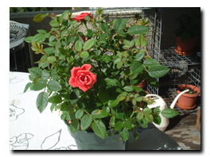 |
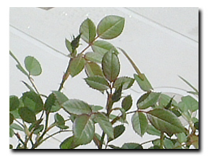 |
| ２週間前のミニバラ |
ミニバラにつぼみが... |
|
| 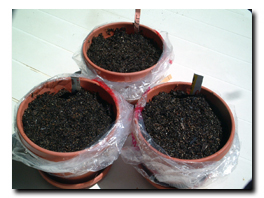 |
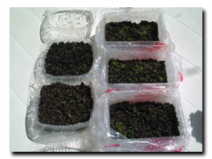 |
1週間前に種まきしました
紫蘇とコリアンダー |
もう芽が...
ジャーマンカモミールとタイム |
|
| 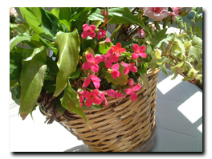 |
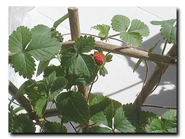 |
| カランコエも元気 |
ワイルドストロベリーに実が... |
|
| 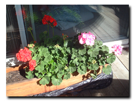 |
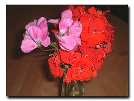 |
| ゼラニウムもどんどん咲きます |
生けてみました |
|
ミニバラは、お花が終わったあと、グッチさんのアドバイスで、5枚葉を残して、
3枚葉と咲き終わった花を切り落としました。水やりをかかさずしていたら、ま
たつぼみが出てきました!カランコエは、１年中咲き続けましたが、とうとう枯
れてしまったので枝を切り落としたら、また新芽が出てきて花が咲きました。
1週間前に種まきしてから、毎朝、水やりが楽しみです。
2004.5.9 Sun.
..+☆ 観察記録 ☆+..
| 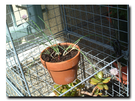 |
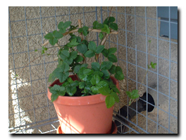 |
| チャイブ |
ワイルドストロベリー |
|
| 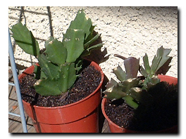 |
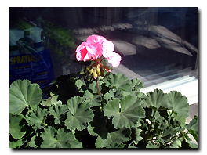 |
| クリスマスカクタス |
ゼラニウム(2週間前) |
|
ゼラニウム以外は、これが現在のうちのバルコニーです。チャイブは花が咲き
ました。ワイルドストロベリーはすくすく伸びています。去年買ったクリスマ
スカクタスも、夏越し用に植え替えて、歯を少しカットしました。
2004.5.4 Tue.
..+☆ 観察記録 ☆+..
| 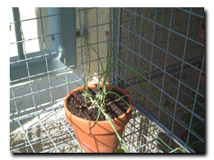 |
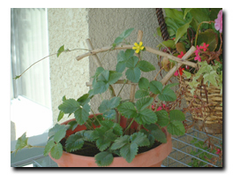 |
| チャイブ |
ワイルドストロベリー |
|
 |
| クリスマスローズ |
|
チャイブはちょっとわかりにくいんだけど、つぼみです。ワイルドストロベリー
は黄色い花が咲きました。去年、いただいたクリスマスローズ、うまく夏越し
できるといいんだけど。4月の初めくらいに撮りました。
|